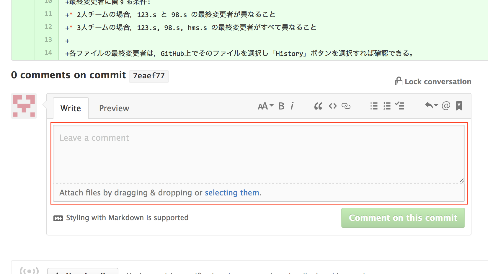

実験レポート練習問題
「実験レポート構成案」を記述する練習をしよう。 実験レポート構成案とは，「実験の目的（何のために）」「実験方法（何を行い）」「実験結果（どうなったか）」「考察（何が主張できるか）」の各項にそれぞれ何を書くかを述べたもの，とここでは定義する。 本番の文書ではないので，箇条書きのみだったり体言止めの文が多用されていたりしても構わないし，詳細は省いていても構わない。 むしろ「何と何と何を書くか」を（自分に対して & グループメンバーに対して）明らかにし，話が一貫しているか確認することが目的なので，そこに注力する方がよい。
演習1.5-1 演習1.3-1〜1.3-4の中から各自1問ずつ選び，その演習に対する「実験レポート構成案」を記述しなさい。他のグループメンバーとは異なる演習問題を選ぶこと。 リポジトリ中のサブディレクトリ chap3 の中の report-XXX.md という名前のテキストファイルに記述しなさい（Markdown形式で記述してもよい）。ただし，XXX の部分には，その演習で作成したアセンブリ言語プログラムのファイル名（から .s を除いたもの）が入る（下記）。 作成したテキストファイルを共有リポジトリにpushしなさい。
- 演習1.3-1 … report-fib13.md
- 演習1.3-2 … report-isprime.md
- 演習1.3-3 … report-nprime255.md
- 演習1.3-4 … report-10thprime.md
演習1.5-2 自分以外のグループメンバーの「実験レポート構成案」を読み，下記のチェック項目それぞれについて，修正すべき点や改善案を記述しなさい（このような作業をレビューと言う）。 3人グループの場合，自分以外の2名のメンバーの実験レポート構成案の両方をレビューしなさい。
- 「○○であることを明らかにする（仮説を検証する）」という形式で「実験の目的」が書かれている。
- 「実験の目的」は演習の内容に対して妥当である（演習内容にそぐわないものになっていない）。
- 「実験方法」で述べた方法によって「実験結果」の内容が得られ，「実験結果」の内容から「考察」の内容が得られる（飛躍や矛盾がない）。
- 「考察」が「実験の目的」に合致している（仮説の成否を述べている）。
- どのようなプログラムを作ったか，どのような実験や動作テストを行ったか，読者が理解するために必要な事柄がすべて挙げられている。
- 工夫点など，アピールできる事柄をもれなく盛り込んでいる。
GitHub上で，レビュー対象実験レポート構成案ファイルの最終コミットに対するコメントとして記述しなさい。当該コミットの詳細ページを開き，ページ下部のコメント欄（下図の赤枠）に記述すればよい。

演習1.5-3 レビュー結果に基づいて，演習1.5-1で記述した実験レポート構成案を改訂しなさい。 改訂結果を共有リポジトリにpushすること。